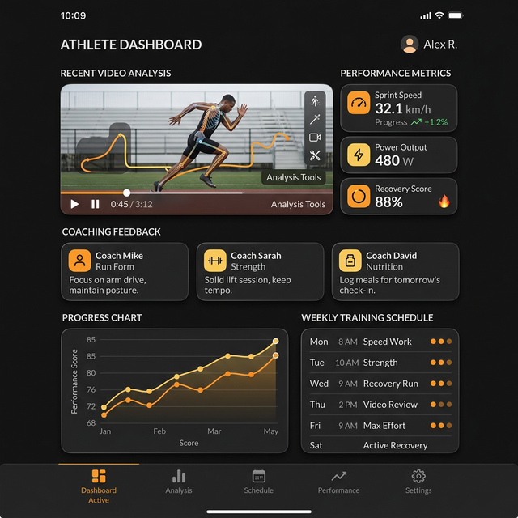

Developed key features for an athletic coaching platform that enables coaches to provide structured feedback through video analysis, performance metrics, and training plans. Built tools that streamline communication between coaches and athletes for improved training outcomes.

Coaching platforms require seamless video recording, upload, analysis, and annotation capabilities — combined with real-time communication and performance tracking. The challenge was to build a fluid experience that handles large video files efficiently while providing coaches with intuitive tools for frame-by-frame analysis and feedback.
Primary development language
Video playback, recording, and processing
Drawing annotations on video frames
Performance data visualization
Background uploads and downloads
Real-time coaching alerts and reminders